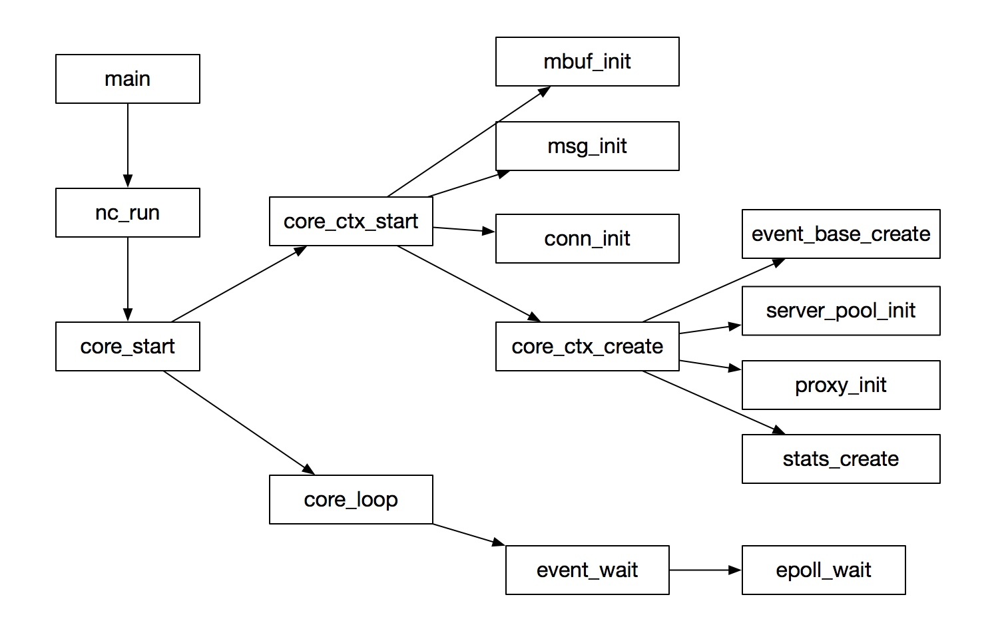
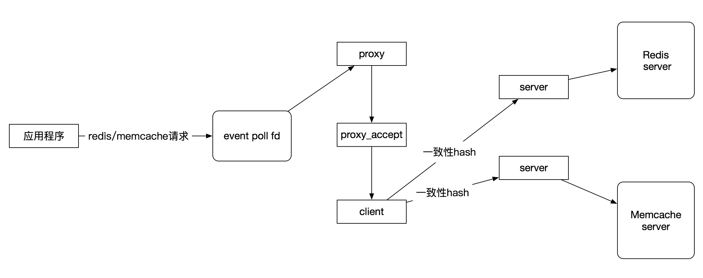
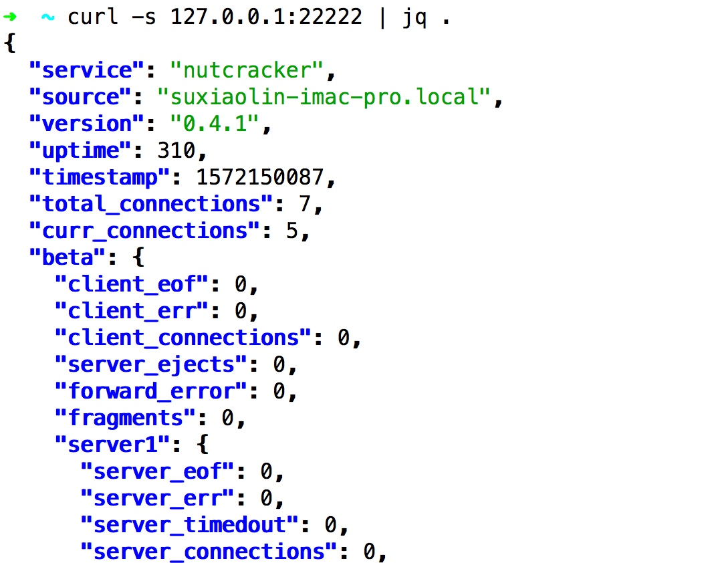

twemproxy是redis和memcached连接池中间件
github项目地址：https://github.com/twitter/twemproxy
项目简介参考：https://github.com/twitter/twemproxy#features
文档参考：https://github.com/twitter/twemproxy/blob/master/notes/recommendation.md
核心流程

主流程就是启动了一个事件循环，所有的逻辑通过事件出发调用回调函数执行
消息流转流程
消息会在三种角色的fd中进行流转：client, server, proxy
| 角色 | 作用 |
|---|---|
| client | 代表应用程序端接入twemproxy的fd |
| proxy | 代表twemproxy服务器的fd，等待应用程序端接入 |
| server | 代表twemproxy链接redis/memcache的fd，proxy fd处理程序会把从client fd读到的数据转到server fd中 |
核心流程如下：

事件系统：epoll/kqueue/evport封装
一般linux使用epoll， mac使用kqueue，Sun Solaris使用evport
twemproxy为了统一底层api调用，对上面的三种事件处理api进行了接口的统一: event/nc_event.h，核心api参考:
| 函数 | 作用 |
|---|---|
| event_base_create() | 创建事件循环管理fd |
| event_add_in() | 将一个fd的读事件纳入事件管理器的管理中 |
| event_add_out() | 将一个fd的读写事件纳入事件管理器的管理中 |
| event_add_conn() | 将一个fd的读写事件纳入事件管理器的管理中 |
| event_wait() | 从事件管理器中获取准备好读/写的fd列表，并调用cb进行处理 |
核心结构体event_base参考: src/event/nc_event.h
struct event_base {
int ep; /* epoll descriptor */
struct epoll_event *event; /* event[] - events that were triggered
int nevent; /* # event */
event_cb_t cb; /* event callback */
};
| 字段 | 作用 |
|---|---|
| ep | 事件管理器fd |
| struct epoll_event | 这个事件管理器可以处理的事件类型（读、写、hup信号） |
| int nevent | 最大取多少个事件 |
| event_cb_t cb | 事件处理回调函数 |
twemproxy中大量使用事件回调来驱动数据流转，上面的event_cb_t就是一个回调函数
typedef int (*event_cb_t)(void *, uint32_t);
核心数据结构和算法
array 变长数组
struct array {
uint32_t nelem; /* # element */
void *elem; /* element */
size_t size; /* element size */
uint32_t nalloc; /* # allocated element */
};
通过调整nelem和*elem指针内容实现动态数组
string 变长字符串
struct string {
uint32_t len; /* string length */
uint8_t *data; /* string data */
};
红黑树
struct rbnode {
struct rbnode *left; /* left link */
struct rbnode *right; /* right link */
struct rbnode *parent; /* parent link */
int64_t key; /* key for ordering */
void *data; /* opaque data */
uint8_t color; /* red | black */
};
一致性hash
参考：src/hashkit/nc_ketama.c
队列
twemproxy使用的队列封装支持数种不同类型的队列
参考：src/nc_queue.h，这个队列文件来自freebsd linx内核：https://github.com/freebsd/freebsd/blob/master/sys/sys/queue.h
配置文件解析
twemproxy使用yaml格式的配置文件，使用libyaml库解析这个yaml格式的配置文件，参考：https://github.com/yaml/libyaml
twemproxy配置文件解析逻辑参考：src/nc_conf.h src/nc_conf.c
协议抽象接口
twemproxy支持memcache, redis两种协议，抽象成接口可以把这个协议从twemproxy主流程中解耦、这样也利于添加新的协议支持
memcached
void memcache_parse_req(struct msg *r);
void memcache_parse_rsp(struct msg *r);
bool memcache_failure(struct msg *r);
void memcache_pre_coalesce(struct msg *r);
void memcache_post_coalesce(struct msg *r);
rstatus_t memcache_add_auth(struct context *ctx, struct conn *c_conn, struct conn *s_conn);
rstatus_t memcache_fragment(struct msg *r, uint32_t ncontinuum, struct msg_tqh *frag_msgq);
rstatus_t memcache_reply(struct msg *r);
void memcache_post_connect(struct context *ctx, struct conn *conn, struct server *server);
void memcache_swallow_msg(struct conn *conn, struct msg *pmsg, struct msg *msg);
redis
void redis_parse_req(struct msg *r);
void redis_parse_rsp(struct msg *r);
bool redis_failure(struct msg *r);
void redis_pre_coalesce(struct msg *r);
void redis_post_coalesce(struct msg *r);
rstatus_t redis_add_auth(struct context *ctx, struct conn *c_conn, struct conn *s_conn);
rstatus_t redis_fragment(struct msg *r, uint32_t ncontinuum, struct msg_tqh *frag_msgq);
rstatus_t redis_reply(struct msg *r);
void redis_post_connect(struct context *ctx, struct conn *conn, struct server *server);
void redis_swallow_msg(struct conn *conn, struct msg *pmsg, struct msg *msg);
可以看到redis和memcached协议被统一封装成了两组对等的接口，对应实现参考：nc_memcache.c nc_redis.c
监控系统
twemproxy使用单独的线程处理监控数据获取请求，参考src/nc_stats.c::stats_start_aggregator
static rstatus_t
stats_start_aggregator(struct stats *st)
{
rstatus_t status;
// error handle...
status = stats_listen(st);
// error handle...
status = pthread_create(&st->tid, NULL, stats_loop, st);
// error handle...
return NC_OK;
}
这个监控线程和主线程间使用结构体共享监控数据，主线程往这个结构体中写入实时监控数据，监控线程接到客户端获取监控数据的请求后，从这个结构体中读取监控数据输出给客户端，核心结构体参考：src/nc_stats.h
typedef enum stats_type {
// ...
} stats_type_t;
struct stats_metric {
// ...
};
struct stats_server {
// ...
};
struct stats_pool {
// ...
};
struct stats_buffer {
// ...
};
struct stats {
// ...
};
使用命令curl -s 127.0.0.1:22222 | jq .可以查看实时的监控信息

信号处理
参考：src/nc_signal.h src/nc_signal.c
static struct signal signals[] = {
{ SIGUSR1, "SIGUSR1", 0, signal_handler },
{ SIGUSR2, "SIGUSR2", 0, signal_handler },
{ SIGTTIN, "SIGTTIN", 0, signal_handler },
{ SIGTTOU, "SIGTTOU", 0, signal_handler },
{ SIGHUP, "SIGHUP", 0, signal_handler },
{ SIGINT, "SIGINT", 0, signal_handler },
{ SIGSEGV, "SIGSEGV", (int)SA_RESETHAND, signal_handler },
{ SIGPIPE, "SIGPIPE", 0, SIG_IGN },
{ 0, NULL, 0, NULL }
};
可以看到twemproxy对多个信号进行回调：signal_handler
void
signal_handler(int signo)
{
//...
switch (signo) {
case SIGUSR1:
break;
case SIGUSR2:
break;
case SIGTTIN:
actionstr = ", up logging level";
action = log_level_up;
break;
case SIGTTOU:
actionstr = ", down logging level";
action = log_level_down;
break;
case SIGHUP:
actionstr = ", reopening log file";
action = log_reopen;
break;
case SIGINT:
done = true;
actionstr = ", exiting";
break;
case SIGSEGV:
log_stacktrace();
actionstr = ", core dumping";
raise(SIGSEGV);
break;
default:
NOT_REACHED();
}
log_safe("signal %d (%s) received%s", signo, sig->signame, actionstr);
if (action != NULL) {
action();
}
if (done) {
exit(1);
}
}
可以看到使用SIGTTIN/信号增加日志输出级别，SIGTTOU降低日志输入级别, SIGHUP重新打开日志文件，SIGINT退出程序，SIGSEGV输出内存core dump文件
一些注意的点
本文基于twemproxy 0.4.1写成
尽管codis目前已经成为redis中间件的事实选择，但是twemproxy作为第一款memcache&redis中间件，仍具有比较大学习价值，并且支持memcache